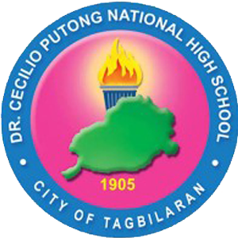

Educational Background
HOLY NAME UNIVERSITY
Bachelor of Science in Information Technology
2023 - 2027
- Aspiring university student, eager to learn and grow in the technology industry.
- Proficient in C language programming using the DevC++ IDE.
- Experienced in HTML5 and CSS web development using Visual Studio Code.
- Exploring other tech fields and gaining the necessary skills.
- High interest in and dream of a career in artificial intelligence, cloud computing, and quantum computing.

DR. CECILIO PUTONG NATIONAL HIGHSCHOOL
Computer Systems Servicing
2017 - 2023
- Gained hands-on experience in CCTV hardware and software installation as a work immersion student at Advance Monitoring & Security Systems, Inc. (AMSSI).
- Developed strong skills in PC building, Ethernet cable creation, PC troubleshooting, modem setup, router setup, Wi-Fi extender setup, operating system installation, simple webpage creation using HTML, peer-to-peer network architecture, server-client network architecture, and server installation and setup in a virtual environment using Oracle VM Virtualbox.
- Demonstrated peoficiency in installing and configuring operating systems, including Windows Server 2008 and 2016.
- Experienced in planning and executing computer laboratory maintenance tasks.
- Demonstrated administrative skills through report creation and system administrator role immersion.